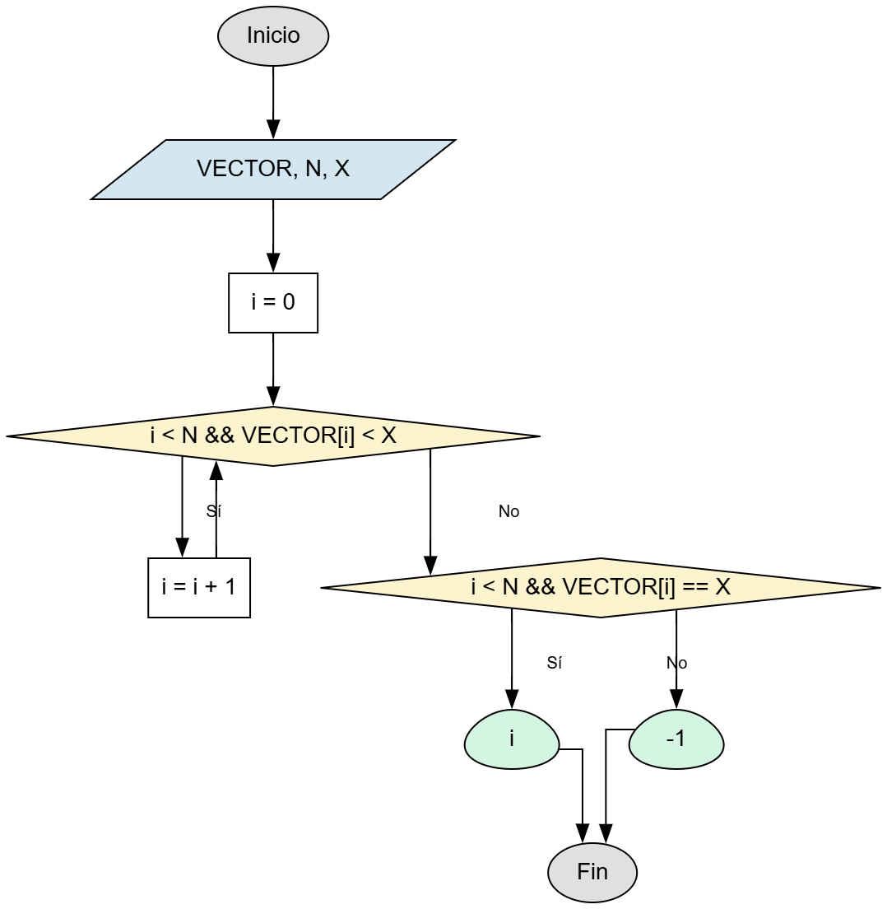

📝 Descripción del Problema
Se tiene un arreglo de números enteros (VECTOR) que ya está ordenado de forma ascendente. El objetivo es realizar una búsqueda secuencial para localizar un número específico X.
Debido a que el arreglo está ordenado, la búsqueda puede detenerse antes de llegar al final: si en algún momento el valor actual del arreglo (VECTOR[I]) es mayor que el número buscado (X), entonces ya no es necesario seguir buscando, pues es imposible que X aparezca más adelante.
Datos: VECTOR (arreglo ordenado ascendentemente) y X (valor entero a buscar).
El algoritmo debe devolver la posición donde se encuentra X, o -1 si no existe dentro del arreglo.
💡 Pistas y Fórmulas Clave
- La clase debe llamarse
BusquedaSecuencialOrdenada.java. - Se utiliza un único bucle
whilepara la búsqueda. - El bucle continúa mientras:
i < vector.length(para no salir del arreglo).vector[i] < x(mientras el valor actual sea menor al buscado).
- Al terminar el bucle, verifica:
vector[i] == xy el índice está dentro del arreglo → encontrado.- Si no se cumplen las condiciones → no encontrado.
- Los casos a probar en tests incluyen:
- Elemento encontrado al inicio, medio y final.
- Elemento no encontrado por ser menor, intermedio o mayor.
📊 Diagrama de Flujo (Inciso A)
Aquí va la imagen del diagrama de flujo.'">